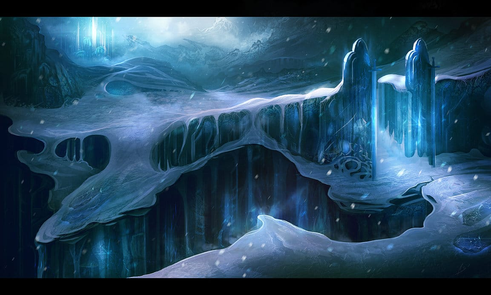

Contexto
El reino de Helheim o Hel es el lugar más parecido a nuestro infierno que existe en la mitología nórdica, salvo por la diferencia principal de que allí no hay fuego eterno, sino hielo, niebla y oscuridad. Es uno de los nueve mundos sostenidos por el sagrado Yggdrasil,y se encuentra situado bajo tierra, junto a las raíces del árbol. Su entrada está guardada por el terrible perro Garm, y el Hraesvelg (o gigante devorador de cadáveres), todos a las órdenes de Hela, la hija de Loki.
Helheim es el destino de quienes fallecen por enfermedad, por vejez o los que han transgredido las leyes de los dioses o los mortales, al contrario que los guerreros caídos en combate que van directamente a los salones del Valhalla. Del reino de Helheim no es posible salir jamás, ni tan siquiera para los dioses, debido a que el reino está rodeado por un río gélido e imposible de cruzar llamado Gjöll, por cuyas aguas navegan afiladas hojas de cuchillo. Este río es la frontera entre Helheim y la región envuelta en las nieblas perpetuas de Niflheim (el mundo de las tinieblas, dentro de Helheim), y sólo hay un puente para cruzarlo, aunque está custodiado por la gigante Modgud quien decide quien cruza y quien no.
Si cruzamos el puente lo primero que veremos será el «bosque de hierro» (Járnvidr), custodiado por y la chamán gigante Angrboda (madre de Hela) una gran extensión de árboles formados por innumerables hojas de afilado acero, y si logramos cruzarlo llegaremos a las puertas de Helheim, donde nos espera el terrible perro guardián Garm, al que sólo podremos apaciguar entregándole una ofrenda de «pastel de Hel»,
Uno de los lugares más inquietantes de Heilhem es el Nastrand, una especie de playa donde en lugar de arena y rocas descansan los restos de los criminales, y que también es llamada la «playa de los cadáveres». Las paredes de esta sala están recubiertas de serpientes, que incesantemente escupen veneno sobre los descompuestos cuerpos de los fallecidos, creando una atmósfera venenosa y corrosiva en toda la estancia.
Precio y servicio
Horarios: de lunes a viernes, los findes para descansar de 15 a 19
Requisitos: No morir en combate
Servicios: Una chaqueta mojada, unas sandalias y una sombrilla
Precio: 400 almas.